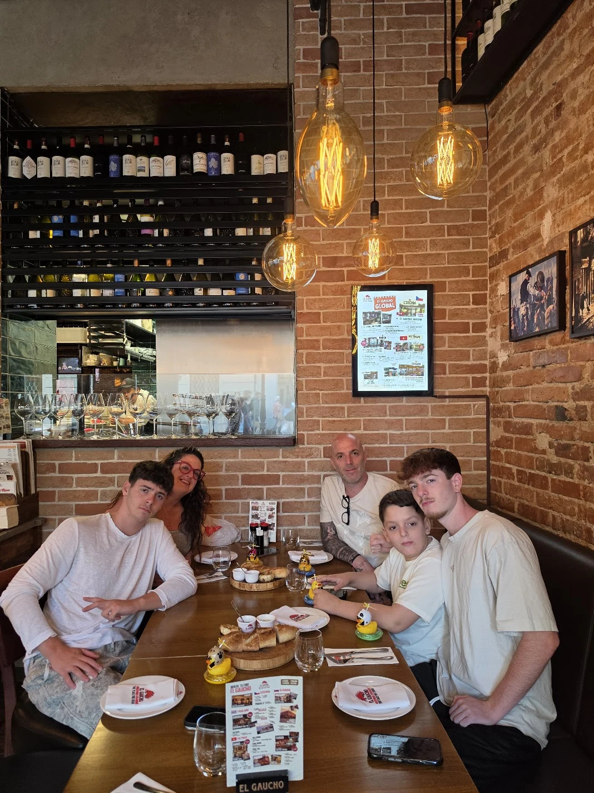

אמיר רוזן
Chief AI Officer (CAIO) | מנהיג טכנולוגיה, חדשנות וצמיחה עסקית
מנהל בכיר בעל מעל 20 שנות ניסיון רב-תחומי, המשלב ראייה אסטרטגית עסקית רחבה עם מומחיות טכנולוגית מעמיקה (כולל Hands-on). הובלת מרכז ה-AI של בנק לאומי בכפיפות ישירה למנכ״ל, ניהול אגפים ויחידות P&L בהיקפי עשרות מיליוני שקלים, ניהול קרן הון סיכון (Irani Ventures), ודירקטוריונים.
קראו גם על האדם שמאחורי המסעמשפחה, ערכים והדרך האישית לקריאהתוצאות מוכחות והישגים מדידים
תחומי מומחיות וערך אסטרטגי
ניסיון תעסוקתי מפורט
מעל 20 שנה של מנהיגות טכנולוגית, פיננסית, קמעונאית וביטחונית. לחץ להרחבת כל תפקיד.
סיקור תקשורתי ומנהיגות דעה
כלל הכתבות בעיתונות המובילה (TheMarker, מעריב, וואלה), ראיונות וידאו, מאמרים מקצועיים ופוסטים מרכזיים.
השכלה, אקדמיה ומנטורינג
תארים והשכלה אקדמית
מנטורינג, שיפוט והוראה אקדמית
העוגן שלי - משפחה, ערכים ותשוקה
טכנולוגיה ו-AI הם כלים רבי עוצמה; האנשים, הערכים והאיזון הם המנוע שמניע את הכל קדימה.

יצירת קשר ישיר ותיאום פגישה
פתוח לשיחות והזדמנויות הובלה בכירות (C-Level / CAIO / Board) בארגונים מובילים, תאגידים וסטארטאפים בצמיחה.